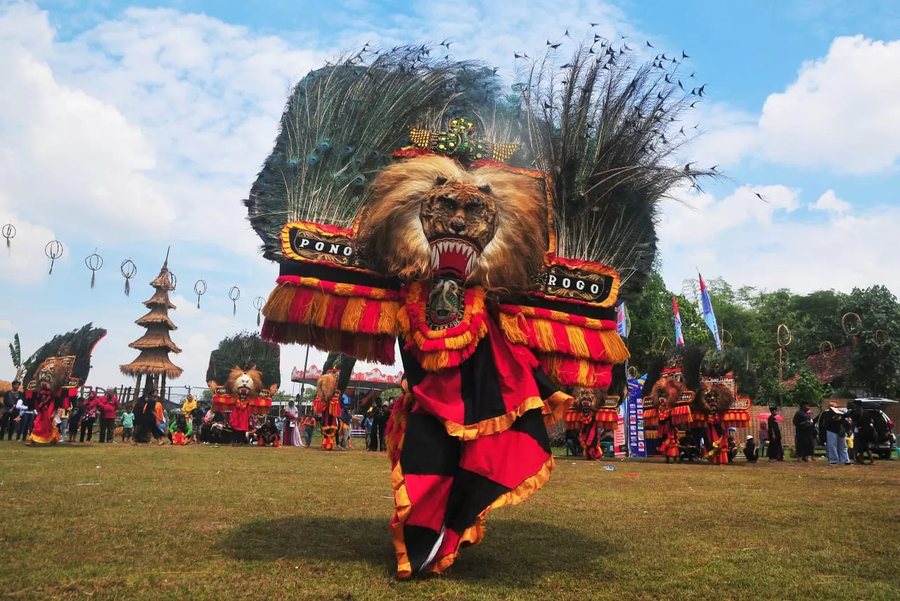
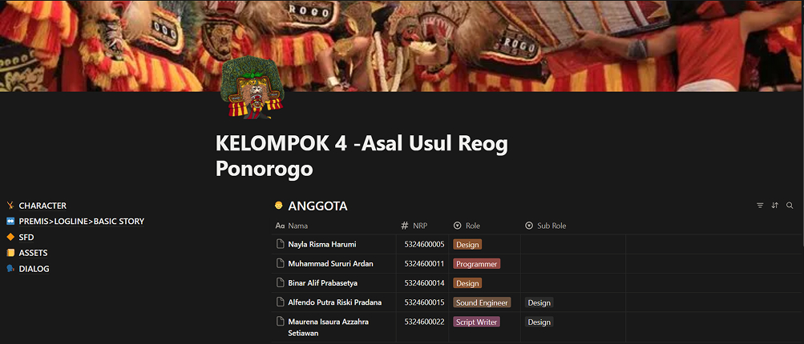
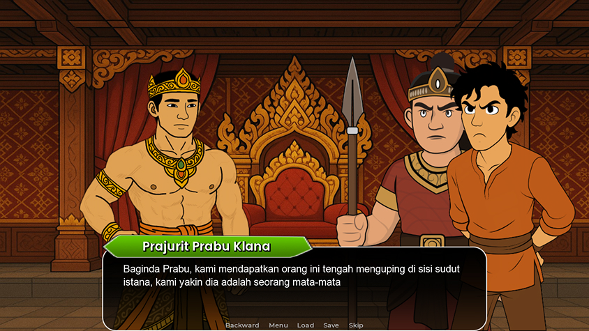
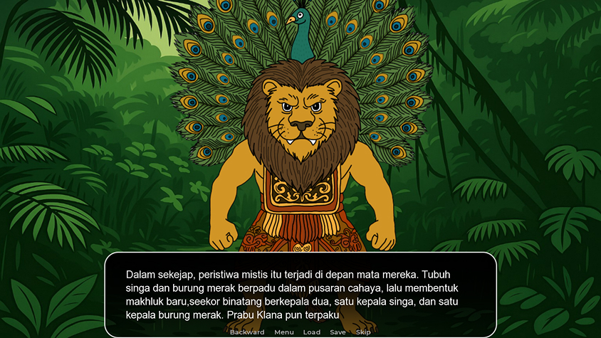
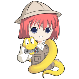

STORY OF THIS PROJECT

Gagasan terbaik sering kali lahir dari kedekatan emosional dan latar belakang budaya yang nyata. Ketika momen penilaian akhir mata kuliah Workshop Storytelling Interaktif di semester 2 tiba, sebuah ide spontan muncul berkat salah satu anggota kelompok yang berdomisili di Ponorogo. Dari obrolan itulah, sebuah keputusan bulat diambil untuk mengangkat kekayaan budaya lokal ke dalam medium modern melalui sebuah game visual novel interaktif berjudul "Asal Usul Reog Ponorogo".

Alur cerita game ini membawa pemain menyelami kisah legendaris Prabu Sewandono, sang penguasa Kerajaan Bantarangin yang terpikat oleh kecantikan jelita sang putri dari Kerajaan Kediri. Namun, cinta tidak datang begitu saja; sang Prabu harus berjuang memenuhi sederet syarat berat yang diajukan oleh Sang Dewi demi bisa meminang pujaan hatinya. Proses perancangan pun berjalan intens, dimulai dari merangkay premis yang kuat, memahat desain karakter yang representatif, hingga menyusun Story Flow Diagram (SFD) yang rumit untuk mengatur setiap percabangan cerita yang akan dipilih oleh pemain.

Di dalam proyek ini, tanggung jawab besar diletakkan pada peran sebagai programmer yang bertugas menyusun dan menghidupkan naskah cerita ke dalam sistem. Langkah ini menjadi sebuah lompatan teknis yang menantang, karena menjadi momen pertama kalinya untuk mempelajari bahasa pemrograman Ren'Py, sebuah engine khusus visual novel yang merupakan turunan dari bahasa Python.
RESULT OF THIS PROJECT
TOOLS USED FOR THIS PROJECT

REN'PYMari kita bangun sesuatu yang luar biasa bersama
Terbuka untuk kesempatan magang, project freelance atau kolaborasi riset.